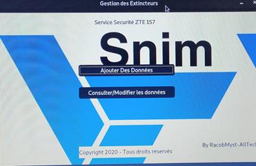
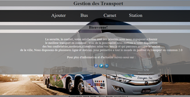

Developpeur-junior(FullStack) | InfoSec
Je développe des sites web a la demande mais aussi des applications bureaux,mobiles IOS/Android
Passionné par l'informatique depuis tout petit surtout la programmation, curieux du monde HIGH-TECH,
je me diversifie dans plusieurs domaines telques le Reseau, le pentest et le monde du hacking.
j'aime echanger et partager mes connaissances avec d'autres.
Je developpe des applis bureaux(Windows,Linux), mobiles(IOS/Android) et je fais aussi du developpement web.
Diplomé en informatique appliqué a la gestion des entreprises de la faculté de science et technique de Nouakchott
"On ne peut voir la lumiere sans l'ombre, on ne peut percevoir le silence sans le bruit, on ne peut atteindre la sagesse sans folie." Carl Gustave Jung
Plusieurs Projets realisés a mon actif
| Serveur FTP | Pare-feu Pfsense |
|  |  |
| Application de Gestion extincteur | Site web de gestion de transport |